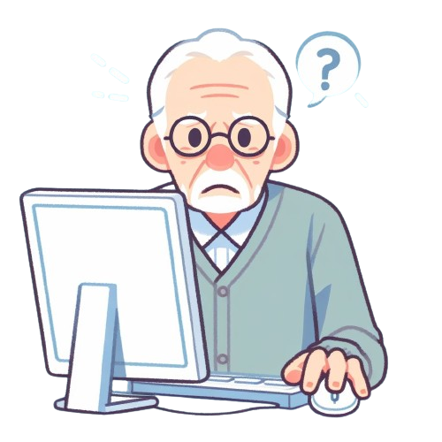

O objetivo principal deste site é tornar o conhecimento de informática acessível para idosos, promovendo a inclusão digital e ajudando-os a serem mais independentes.
Com uma interface fácil de usar e conteúdos interativos, o aplicativo visa ensinar os idosos a usar o computador de maneira prática e divertida.
Desde aprender a usar o teclado e o mouse até navegar na internet, se comunicar online e aproveitar os serviços digitais essenciais, o site está aqui para guiar e apoiar cada passo do aprendizado.

Objetivo Principal do Site
- Democratizar o acesso ao conhecimento de informática para idosos.
- Promover a inclusão digital.
- Fomentar a autonomia dos idosos.
Conteúdo Oferecido
- Uso básico do teclado e mouse.
- Navegação na internet.
- Comunicação.
- Utilização de serviços digitais essenciais.